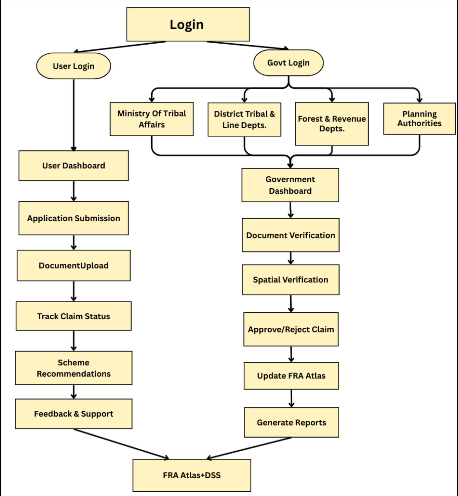
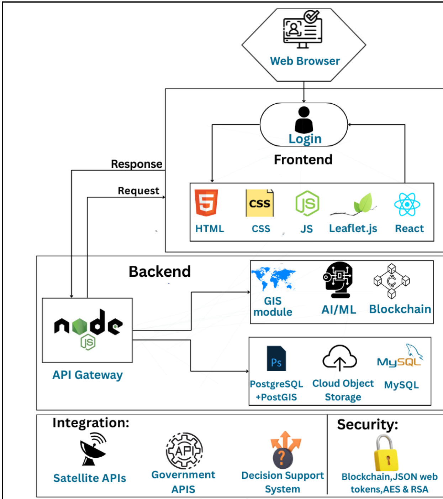

SMART INDIA HACKATHON 2026
TITLE PAGE

Team
VirasatX
IDEA TITLE
❖ Proposed Solution:
• Unified Digital Heritage Portal :
Comprehensive repository linking monuments, artifacts, manuscripts, and living traditions.
• Digital Witness & Testimony:
Oral histories, artisan testimonies, and video records stored securely as valid proof.
• Title Insurance / Digital Patta :
Ensures authenticity with secure blockchain-backed provenance and artifact registration.
• Grievance Resolution & Illegal Alerts:
Efficient heritage grievance handling and unauthorized land encroachment warnings.
• AI Disciplinary Dashboard :
Suggests actions and tracks officer and institutional cataloging accountability.
• Analytics-Driven Officer Monitoring:
Tracks verification time, claim outcomes, and conservation grievances reported.
• Interactive Virasat Web-GIS Atlas:
Dynamic platform for exploring heritage assets, ancient corridors, and excavation sites.
• AI Disputes Mediator:
Resolving conflicts and contested claims within existing legal frameworks.
• GI Tagging and E-Signature :
To preserve cultural heritage safeguard traditional products and paperless approval .
Team
VirasatX
TECHNICAL APPROACH
• Data Extraction: Optical Character Recogntion(OCR), NLP.
• WebGIS platform: Leaflet.js(for interactive maps).
• Asset Mapping: Random Forest & CNN.
• Data Storage: PostgreSQL & PostGIS(for geospatial data).
• Data Management: Cloud Object Storage & MySQL(Structured).
• GeoServer: Use standard protocols WMS and WFS to serve maps.
• Decision Support System: for scheme recommendations.
• Blockchain based Security: Hyperledger Fabric.
• Key Lock Framework: Open-source Identity & Access Management
• Rasa: Preferred for its offline, multilingual, and secure chatbot.

User Interface: It is a draft version, subject to future updates.
Team
VirasatX
FEASIBILITY AND VIABILITY
❖ Feasibility:
1. Technical Feasibility:
1.Digitization, AI Mapping and Web-GIS Dashboards:
• OCR and AI extract data from documents & manuscripts.
• Web-GIS dashboards show real-time interactive maps.
2. DSS Integration with Blockchain Security:
• AI engines match schemes to community needs.
• Blockchain ensures secure, tamper-proof digital records.
2. Operational Feasibility:
1.Existing Setup and Simple Staff Training:
• Government data exists, needs proper connection.
• Staff need basic training through short workshops.
2. Stakeholder Support and Effective Heritage Implementation:
• Ministries and NGOs already support cultural preservation schemes.
• System strengthens efforts, not replacing existing work.
3. Legal & Ethical Feasibility:
1.Data Privacy:
• Must follow India’s DPDP Act, ensuring legal compliance.
• Blockchain and encryption safeguard sensitive user data.
2. Consent Mechanism:
• Artisan & community informed consent required in all processes.
• Real-time feedback enables secure two-way communication.
❖ Viability:
1. Economic Viability:
1.Cost-Effective & Efficient:
• Saves paperwork, effort, duplication, and reduces fraud.
• Cuts processing delays, expenses, and operational overhead.
2. Supported & Scalable Technology:
• Backed by government programs and tribal inclusion schemes.
• Open-source tech ensures flexible, low-cost,future-ready deployment.
2. Social Viability:
1. Empowers Communities & Improves Scheme Access:
• Provides transparency, secure records, better documentation.
• Directly benefits artisans & custodians through scheme access.
2. Reduces Conflict & Promotes Stronger Inclusion:
• Verified records, alerts reduce frequent attribution disputes.
• Mobile updates, two-way communication improve engagement.
3. Scalability:
1. Pan-India Expansion for Wider Community Benefits:
• Pilot in districts, then scale across India.
• Adjust platform easily for local data.
2. Cross-Sector Use of WebGIS + DSS:
• Adaptable for agriculture, urban development needs.
• Useful in disaster management and planning.
Team
VirasatX
IMPACT AND BENEFITS
❖ Benefits:
1.Social Benefits:
• Digital platform enables communities with cultural rights tracking.
• IVR helpline, e-learning ensure inclusive literacy access.
• Transparent records, video testimonies reduce conflict, build trust.
2. Environmental Benefits:
• Sustainable site usage by recognized communities & travelers.
• Conservation through community stewardship.
• GI Tagging preserves cultural heritage & traditional products.
3. Economic Benefits:
• Access to schemes (MGNREGA, PM-KISAN, DAGAJU, Jal Jeevan Mission)
• GI Tagging boosts local products & tribal livelihoods
• Title insurance & digital patta ensure secure land ownership → easier loans & income stability
4. Governance Benefits:
• Audit trails ensure accountability, prevent misuse.
• Whistleblowing portal boosts transparency, fights corruption.
• Cross-validation stops duplication and fraudulent claims.
5.Legal & Security Benefits:
• E-Signature & Digital Patta provide legally valid ownership records.
• Protection against land encroachment (Illegal Practice Alert).
• Digital witness/testimony ensures fair dispute settlement.
❖ Impacts:
1.Secure Cultural Rights & Transparency:
• Communities track claims, reducing corruption and fraud.
• Digital patta ensures authenticity in land ownership records.
• Builds trust between citizens and government authorities.
2. Heritage Protection & Conservation with AI:
• AI monitors land to prevent illegal encroachment.
• Conserves biodiversity and safeguards natural resources.
• Promotes sustainable, community-driven cultural preservation.
3. Boost Livelihoods & Local Development:
• Resource planning improves incomes and rural economy.
• GI tagging protects heritage, boosts local products.
• VirasatX enables fair access to welfare schemes.
4. Digital, Eco-Friendly & Cost Effective:
• Reduces paperwork,ensuring greener, eco-friendly governance.
• Preserves tribal knowledge through digital archiving tools.
• Lowers administrative costs and increases efficiency.
5. Smart, Transparent & Scalable Governance:
• Transparent dashboards track officer performance and claims.
• AI dispute mediation ensures fairness, reduces human bias.
• Unified digital platform enables future-ready expansion.
Team
VirasatX
RESEARCH AND REFERENCES
1. AMASR Act & NMM: The Ancient Monuments and Archaeological Sites and Remains Act, 1958 and National Mission on Manuscripts (NMM) provide statutory framework for heritage protection.
2. Best Practices for Web Security: OWASP Top 10 API Security & Blockchain Verification Standard for Immutable Provenance.
3. The Antiquities and Art Treasures Act: 1972 aims to regulate export trade in antiquities and art treasures, preventing illicit smuggling and unauthorized sales.
To enable smooth implementation and integration of the Virasat Atlas System, the following contacts serve as official state-level resources for communication, data coordination, and support:
4. Archaeological Survey of India (ASI): contact.asi@gov.in
5. National Mission on Manuscripts (IGNCA): director.nmm@ignca.nic.in
6. Ministry of Culture, Govt. of India: https://www.indiaculture.gov.in/
7. National Portal of India: https://www.india.gov.in/topics/art-culture
SMART INDIA HACKATHON 2025
TITLE PAGE
Team
Hackastra
IDEA TITLE
❖ Proposed Solution:
• NGO Digital Aid :
Teach Gram Sabhas and communities apps, IVR, and GIS tools.
• Digital Witness & Testimony:
Voice and video records stored securely as valid proof.
• Title Insurance / Digital Patta :
Ensures authenticity with secure 7/12 land record entry.
• Grievance Resolution & Illegal Alerts:
Efficient FRA grievance handling and unauthorized land encroachment warnings.
• AI Disciplinary Dashboard :
Suggests actions and tracks officer accountability.
• Analytics-Driven Officer Monitoring:
Tracks verification time, claim outcomes, and grievances reported.
• Interactive FRA Web-GIS Atlas:
Dynamic platform for exploring forest rights and assets.
• AI Disputes Mediator:
Resolving conflicts within existing legal frameworks.
• GI Tagging and E-Signature :
To preserve cultural heritage safeguard traditional products and paperless approval .

Team
Hackastra
TECHNICAL APPROACH
• Data Extraction: Optical Character Recogntion(OCR), NLP.
• WebGIS platform: Leaflet.js(for interactive maps).
• Asset Mapping: Random Forest & CNN.
• Data Storage: PostgreSQl & PostGIS(for geospatial data).
• Data Management: Cloud Object Storage & MySQL(Structured).
• GeoServer: Use standard protocols WMS and WFS to serve maps.
• Decision Support System: for scheme recommendations.
• Blockchain based Security: Hyperledger Fabric.
• Key Lock Framework: Open-source Identity & Access Management
• Rasa: Preferred for its offline, multilingual, and secure chatbot.
User Interface: It is a draft version, subject to future updates.

Team
Hackastra
FEASIBILITY AND VIABILITY
❖ Feasibility:
1. Technical Feasibility:
1.Digitization, AI Mapping and Web-GIS Dashboards:
• OCR and AI extract data from documents.
• Web-GIS dashboards show real-time interactive maps.
2. DSS Integration with Blockchain Security:
• AI engines match schemes to community needs.
• Blockchain ensures secure, tamper-proof digital records.
2. Operational Feasibility:
1.Existing Setup and Simple Staff Training:
• Government data exists, needs proper connection.
• Staff need basic training through short workshops.
2. Stakeholder Support and Effective FRA Implementation:
• Ministries and NGOs already support FRA schemes.
• System strengthens efforts, not replacing existing work.
3. Legal & Ethical Feasibility:
1.Data Privacy:
• Must follow India’s DPDP Act, ensuring legal compliance.
• Blockchain and encryption safeguard sensitive user data.
2. Consent Mechanism:
• FRA holders’ informed consent required in all processes.
• Real-time feedback enables secure two-way communication.
❖ Viability:
1. Economic Viability:
1.Cost-Effective & Efficient:
• Saves paperwork, effort, duplication, and reduces fraud.
• Cuts processing delays, expenses, and operational overhead.
2. Supported & Scalable Technology:
• Backed by government programs and tribal inclusion schemes.
• Open-source tech ensures flexible, low-cost,future-ready deployment.
2. Social Viability:
1. Empowers Communities & Improves Scheme Access:
• Provides transparency, secure records, better documentation.
• Directly benefits FRA holders through scheme access.
2. Reduces Conflict & Promotes Stronger Inclusion:
• Verified records, alerts reduce frequent land disputes.
• Mobile updates, two-way communication improve engagement.
3. Scalability:
1. Pan-India Expansion for Wider Community Benefits:
• Pilot in districts, then scale across India.
• Adjust platform easily for local data.
2. Cross-Sector Use of WebGIS + DSS:
• Adaptable for agriculture, urban development needs.
• Useful in disaster management and planning.
Team
Hackastra
IMPACT AND BENEFITS
❖ Benefits:
1.Social Benefits:
• Digital platform enables communities with land rights tracking.
• IVR helpline, e-learning ensure inclusive literacy access.
• Transparent records, video testimonies reduce conflict, build trust.
2. Environmental Benefits:
• Sustainable forest use by recognized communities.
• Conservation through community stewardship.
• GI Tagging preserves cultural heritage & traditional products.
3. Economic Benefits:
• Access to schemes (MGNREGA, PM-KISAN, DAGAJU, Jal Jeevan Mission)
• GI Tagging boosts local products & tribal livelihoods
• Title insurance & digital patta ensure secure land ownership → easier loans & income stability
4. Governance Benefits:
• Audit trails ensure accountability, prevent misuse.
• Whistleblowing portal boosts transparency, fights corruption.
• Cross-validation stops duplication and fraudulent claims.
5.Legal & Security Benefits:
• E-Signature & Digital Patta provide legally valid ownership records.
• Protection against land encroachment (Illegal Practice Alert).
• Digital witness/testimony ensures fair dispute settlement.
❖ Impacts:
1.Secure Land Rights & Transparency:
• Communities track claims, reducing corruption and fraud.
• Digital patta ensures authenticity in land ownership records.
• Builds trust between citizens and government authorities.
2. Forest Protection & Conservation with AI:
• AI monitors land to prevent illegal encroachment.
• Conserves biodiversity and safeguards natural resources.
• Promotes sustainable, community-driven forest management.
3. Boost Livelihoods & Local Development:
• Resource planning improves incomes and rural economy.
• GI tagging protects heritage, boosts local products.
• FRA enables fair access to welfare schemes.
4. Digital, Eco-Friendly & Cost Effective:
• Reduces paperwork,ensuring greener, eco-friendly governance.
• Preserves tribal knowledge through digital archiving tools.
• Lowers administrative costs and increases efficiency.
5. Smart, Transparent & Scalable Governance:
• Transparent dashboards track officer performance and claims.
• AI dispute mediation ensures fairness, reduces human bias.
• Unified digital platform enables future-ready expansion.
Team
Hackastra
RESEARCH AND REFERENCES
1. FRA: The Forest Rights Act (FRA), 2006 gives rights to forest-dwelling and tribal people, but challenges in implementation remain.
2. Best Practices for Web Security: This guide outlines key web security measures to safeguard user information using Blockchain Technology.
3. The Wildlife Protection Act: 1972 aims to protect wild animals, birds, plants, and their habitats.
To enable smooth implementation and integration of the FRA Atlas System, the following contacts serve as official state-level resources for communication, data coordination, and support:
4. Madhya Pradesh: dirtadp@mp.gov.in
6. Tripura: https://forest.tripura.gov.in/
7. Telangana: https://forestrights.telangana.gov.in/